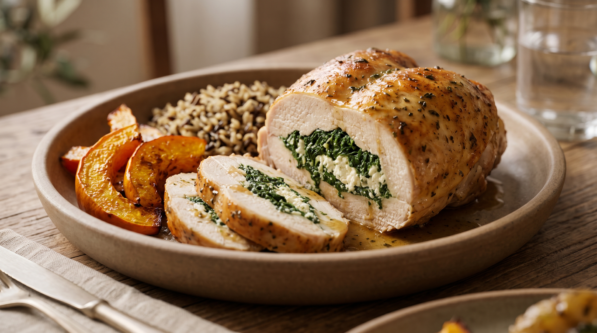
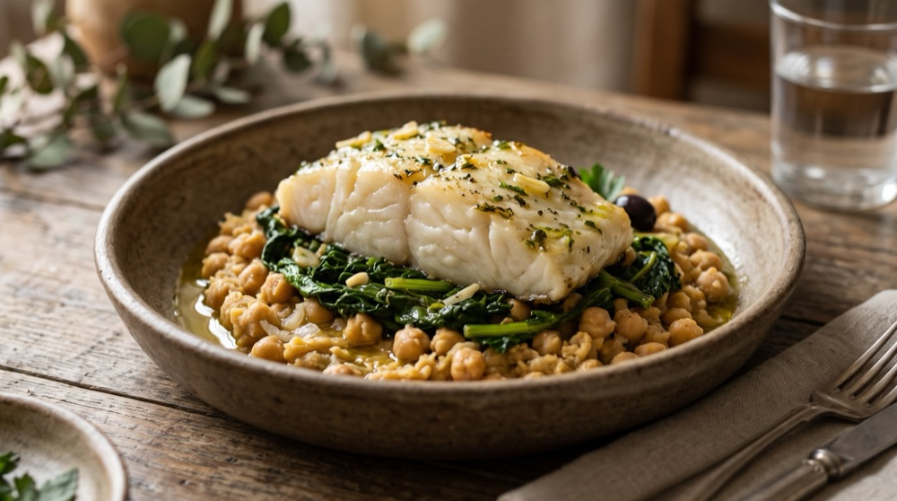
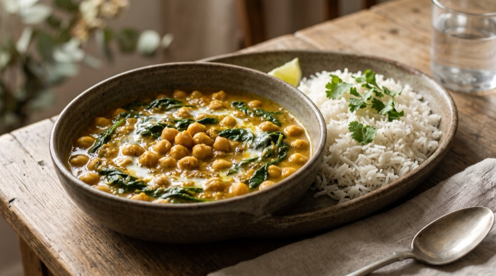
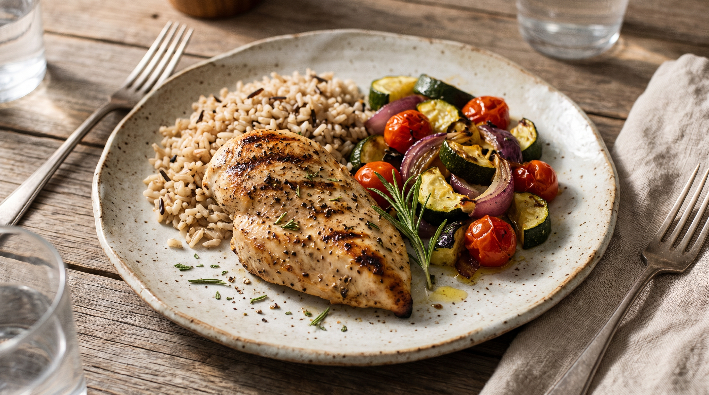
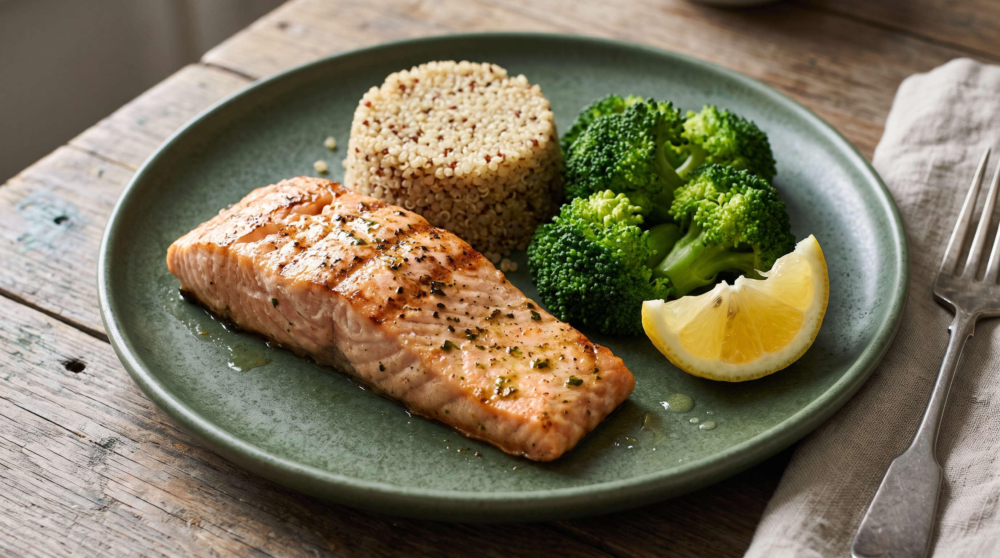
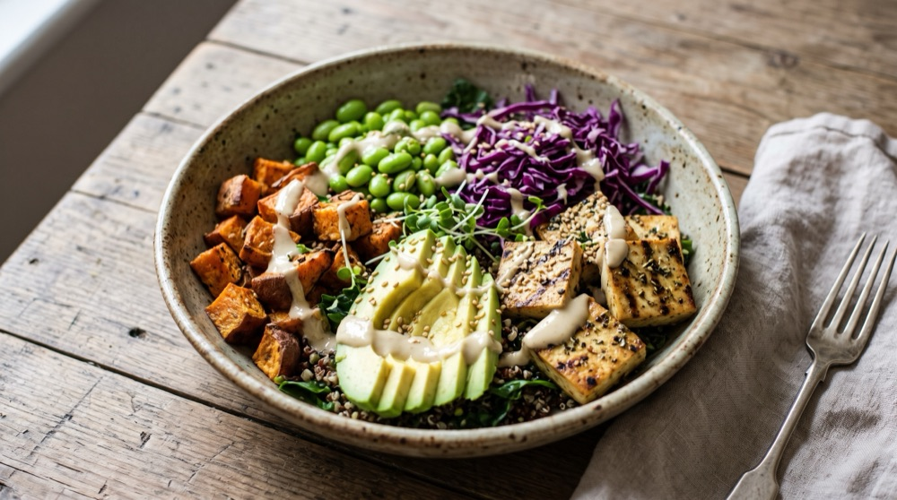
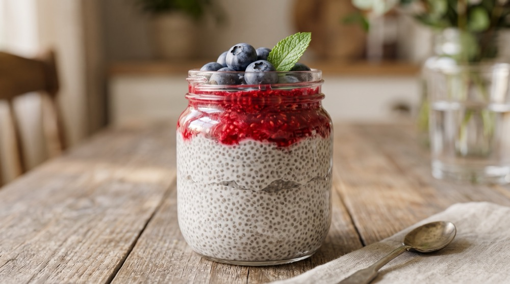
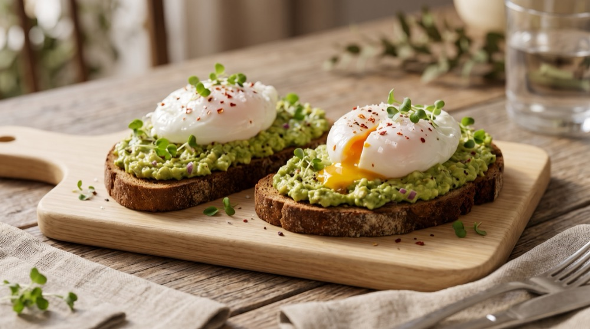
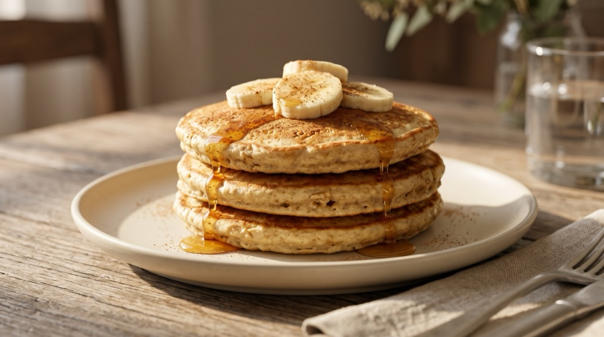
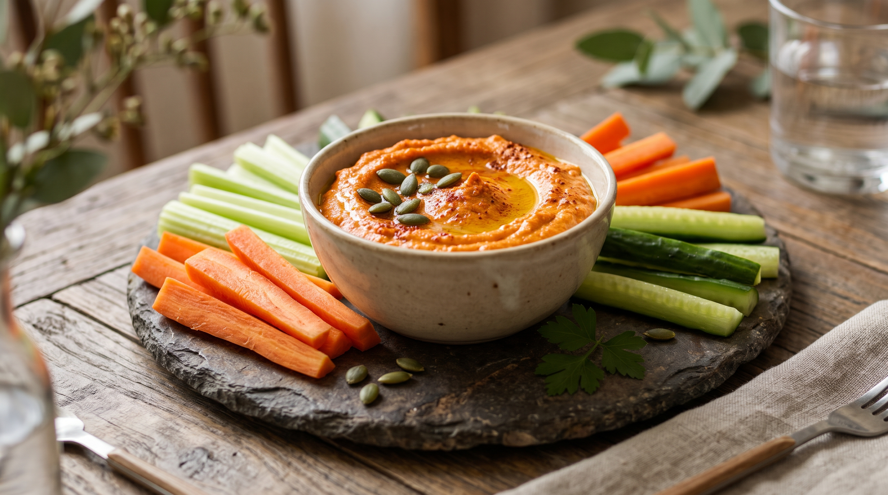

Menu e Planos de Subscrição
Refeições confecionadas com ingredientes biológicos frescos, prontas em 3 minutos para facilitar a sua semana.
As Nossas Marmitas & Lanches Saudáveis
Ingredientes 100% biológicos certificados de produtores locais do Norte, com tabelas nutricionais transparentes e embalagens bioplásticas com recolha gratuita.

Carne Magra • ConfortoPeito de Peru Recheado
Com espinafres frescos e batata-doce assadaPeito de peru de criação livre recheado com espinafres biológicos salteados em azeite virgem extra, acompanhado de cubos de batata-doce assada no forno e legumes da época.

Peixe Tradicional • NobreLombo de Bacalhau com Grão
Em cama de esmagada de grão e couve portuguesaLombo nobre de bacalhau confitado em azeite biológico e alho, servido sobre esmagada rústica de grão-de-bico biológico e couve coração fresca da Horta do Vale.

100% Vegan • AromáticoCaril de Grão & Espinafres
Com arroz basmati perfumado e leite de coco bioGrão-de-bico biológico estufado suavemente com espinafres tenros, especiarias orientais equilibradas e leite de coco biológico, servido com arroz basmati aromático.

Receita ClássicaFrango do Campo Grelhado
Com arroz integral e legumes rústicos assadosPeito de frango biológico nacional marinado com alecrim e azeite virgem extra, acompanhado de arroz integral e legumes colhidos na manhã de confeção.

Fitness • Alto Teor ProteicoSalmão Fresco & Quinoa Real
Ao perfume de limão com brócolos ao vaporLombo de salmão fresco grelhado ao ponto, acompanhado de timbale de quinoa real biológica e raminhos de brócolos frescos cozidos ao vapor estaladiço.

Plant-Based BowlBowl de Tofu & Abacate
Com edamame, batata-doce e molho sésamoTofu bio marinado em ervas portuguesas e grelhado, fatias de abacate fresco, edamame crocante, cubos de batata-doce assada e fio de vinagre balsâmico biológico.

Lanche • Prático & PremiumPudim de Chia com Frutos Vermelhos
Leite vegetal de amêndoa e framboesas biológicasSementes de chia biológica hidratadas em leite de amêndoa sem açúcar adicionado, cobertas com coulis artesanal de amoras e framboesas frescas do Norte.

Pequeno-Almoço • EnergéticoTostas de Centeio com Abacate e Ovo
Pão artesanal de centeio, abacate fresco e ovo biológicoFatia de pão de centeio de fermentação lenta com puré rústico de abacate fresco, sementes de abóbora tostadas e ovo escalfado biológico da Quinta da Serra.

Kids Friendly • FamiliarPanquecas de Aveia & Banana com Mel
Aprovado por crianças (como a Matilde, 4 anos!)Panquecas fofas preparadas com farinha de aveia integral, banana madura e canela biológica, acompanhadas por um fio de mel puro de urze do Parque Natural das Serras do Porto.

Snack de Trabalho • FrescoHúmus de Pimento com Palitos de Vegetais
Crocante, refrescante e ideal para levar para o escritórioHúmus artesanal de grão-de-bico com pimento vermelho assado e azeite virgem extra, servido com palitos frescos de cenoura doce e pepino biológicos da horta.
Escolha o Seu Plano Semanal
Subscrição semanal sem qualquer período de fidelização. Agendamento com dia, horário e morada (domicílio ou trabalho) à sua escolha no Grande Porto, com pausa ou cancelamento gratuito com 48h de aviso prévio.
Plano Individual
5 refeições semanais • 7,98 € / dose
- 5 marmitas ou lanches biológicos à escolha do menu completo
- 🎁 2 lanches biológicos de brinde incluídos grátis
- Perfeito para almoços e snacks de segunda a sexta
- Entrega flexível incluída em todo o Grande Porto
- Embalagens a vácuo (conservam 7 dias a 2°C–4°C)
- Recolha gratuita das embalagens na entrega seguinte
Plano Casal
10 refeições semanais • 7,49 € / dose
- 10 marmitas ou lanches biológicos à sua escolha
- 🎁 2 lanches biológicos de brinde incluídos grátis
- Almoços, jantares e snacks sem preocupações para dois
- Horário e local de entrega combinados à medida
- Recolha e encaminhamento circular para compostagem
- Pausa ou cancelamento com 48h de aviso prévio
Plano Família
15 refeições semanais • 6,99 € / dose
- 15 marmitas ou lanches adaptados para adultos e crianças
- 🎁 2 lanches biológicos de brinde incluídos grátis
- Possibilidade de entrega fracionada em 2 vezes por semana
- Ingredientes 100% de quintas parceiras locais
- Canal de apoio preferencial via WhatsApp
- Recolha sistemática de todas as embalagens vazias
Resumo das Condições Comerciais & Limites do Serviço
Entregas restritas à área metropolitana do Grande Porto (Porto, Gaia, Matosinhos, Maia, Gondomar).
Qualquer pausa, troca de pratos ou cancelamento deve ser solicitada até 48h antes da entrega.
Pagamentos seguros via MB WAY, Referência Multibanco e Cartão de Débito/Crédito.
As embalagens vazias são entregues ao estafeta na semana seguinte para compostagem industrial.
| Vantagem Competitiva | 🌱 BioMarmita (Grande Porto) | 📦 Serviços Tradicionais / Concorrência Nacional |
|---|---|---|
| Ingredientes Biológicos | ✓ 100% Biológicos Certificados de quintas do Norte | ✗ Convencionais, sem certificação biológica global |
| Embalagens & Descarte | ✓ Bioplástico Compostável (EN 13432) com recolha gratuita | ✗ Plástico fóssil comum descartável no lixo/ecoponto |
| Logística de Entrega | ✓ Horário e morada flexíveis (domicílio ou escritório no Grande Porto) | ✗ Janelas rígidas de transportadora geral sem agendamento à medida |
| Rastreabilidade | ✓ Quintas parceiras identificadas em cada refeição | ✗ Fornecedores industriais anónimos |
| Conservação & Tecnologia a Vácuo | ✓ Selagem hermética a vácuo: até 7 dias no frigorífico mantendo textura e sabor sem conservantes | ✗ Sem vácuo: perda rápida de frescura ou necessidade de congelamento |
| Rapidez no Dia a Dia | ✓ Pronto em 3 minutos no micro-ondas direto do frigorífico (sem descongelar) | ✓ Pronto em 3 minutos (ou mais se congelado) |
Informação Nutricional Transparente
Acreditamos que deve saber com exatidão o que coloca no seu prato.
Calorias Controladas
Porções calculadas entre 400 e 550 kcal para saciedade duradoura sem peso.
Proteínas Nobres
Fontes limpas e naturais: carnes biológicas, peixe sustentável e leguminosas.
Sem Aditivos Artificiais
Zero conservantes químicos, sem gorduras hidrogenadas e sem açúcares adicionados.
Origem Rastreada
Cada prato indica as quintas parceiras onde os seus ingredientes foram cultivados.